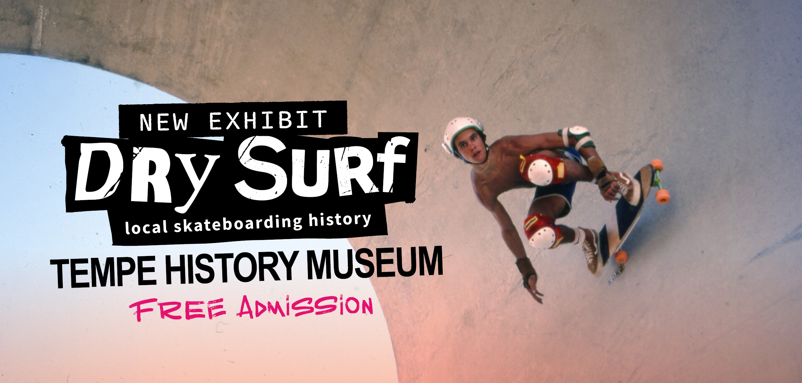
The Challenge
To use this archival photo to design a logo that looked like it belonged in the Tempe skate scene of the '70s, '80s and '90s.
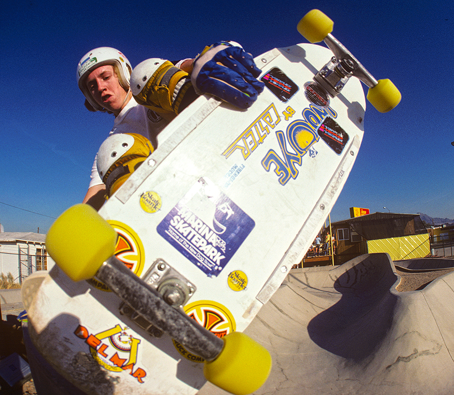
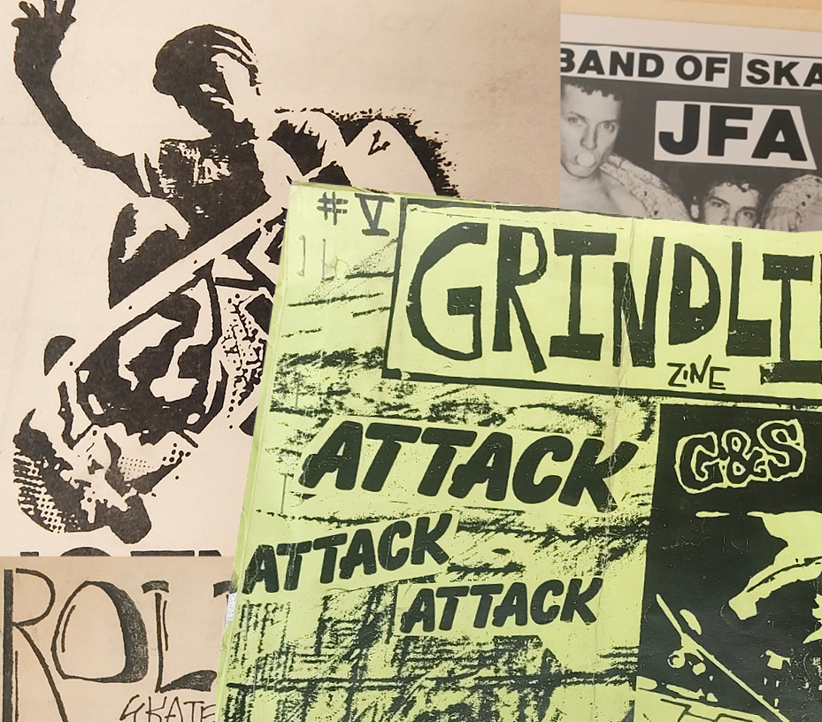
Research
Before Photoshop, skaters built flyers and zines with scissors, tape, markers, typewriters and Xerox machines. The crooked edges, photocopy shadows and rough layouts weren't mistakes; they were the foundations of the skater-punk look.
My Solution
If scissors, Sharpies and Xerox machines were how the OG skaters made art, then that's how I was going to make mine. I traced the archival photo on my light board with a flat-tip Sharpie over and over until it had just the right attitude. Then I scanned it and brought it into the computer.
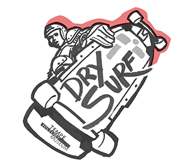
From there, I developed two directions: one inspired by handmade skate zines and another influenced by graffiti. Both concepts were shown at a community event and skaters were asked what they thought. The zine-inspired version was chosen.
Graffiti Style
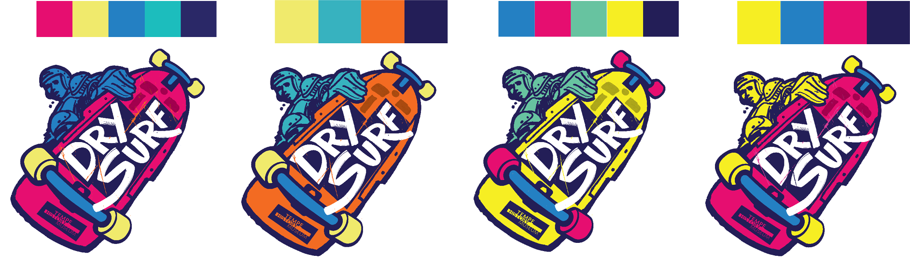
Zine Style
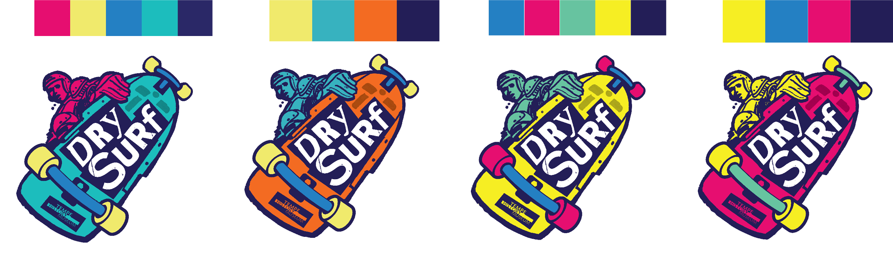
Finals
For the color palette, I leaned into a CMYK-inspired pop-art look and created multiple color combinations instead of a single version. That way, people could choose the one that looked best on their skateboard, water bottle or laptop.
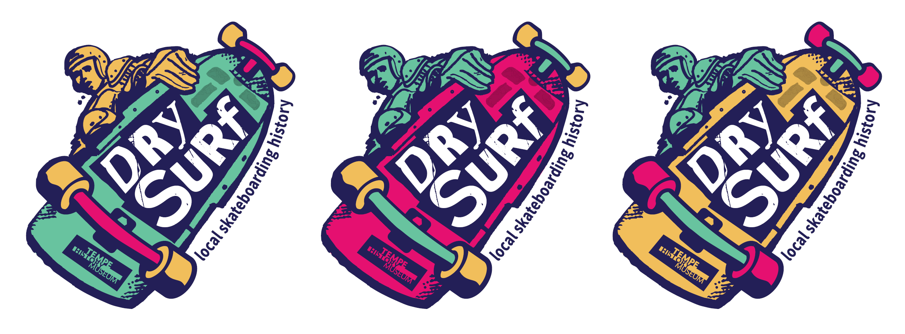
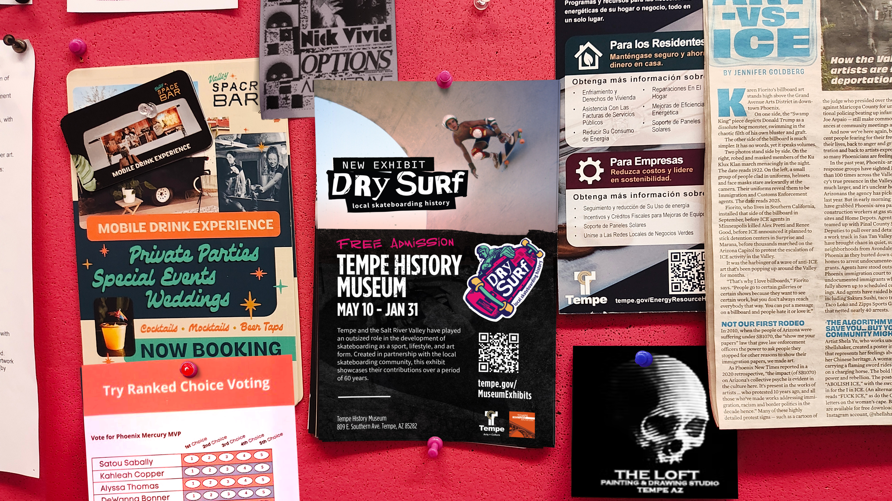
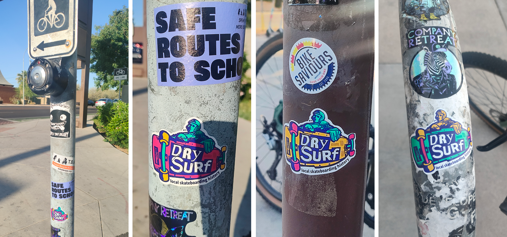
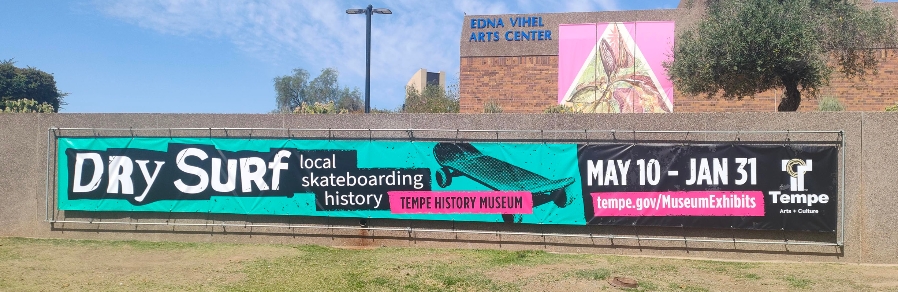
525
Opening Attendance
21,609
Total Visitors
More From the Campaign


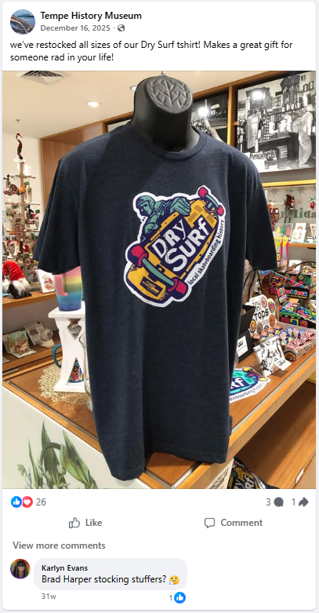
$15,694.47
In retail sales at the store
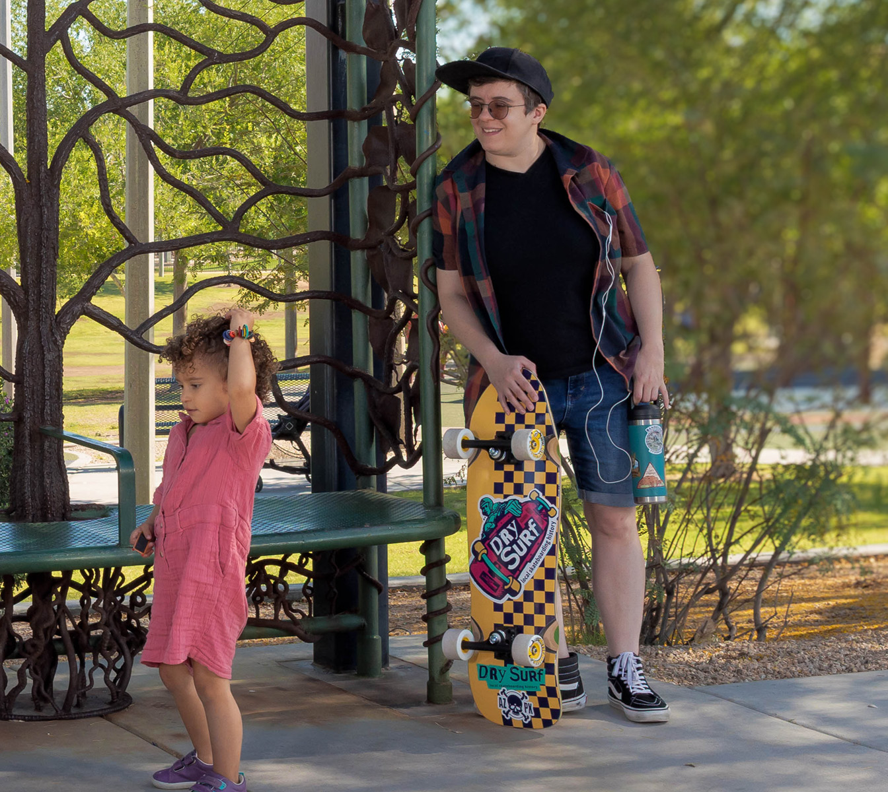
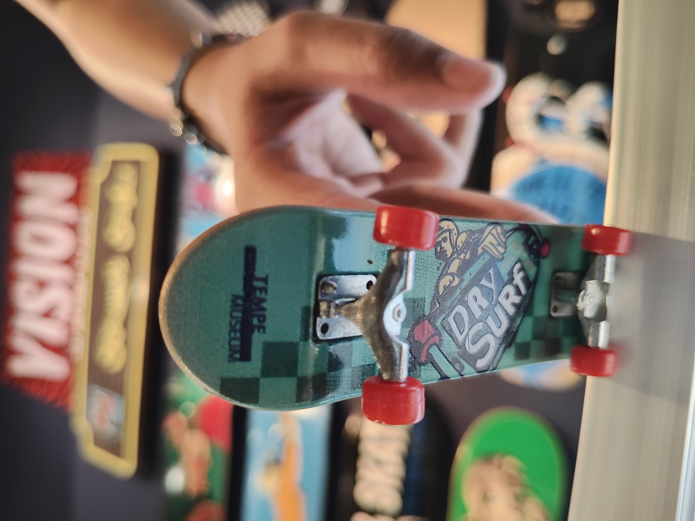
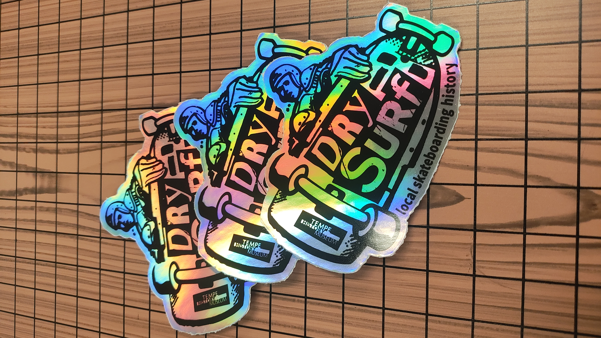